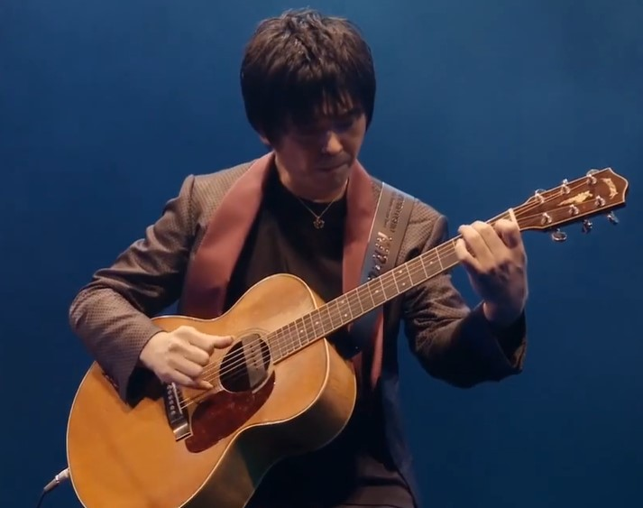
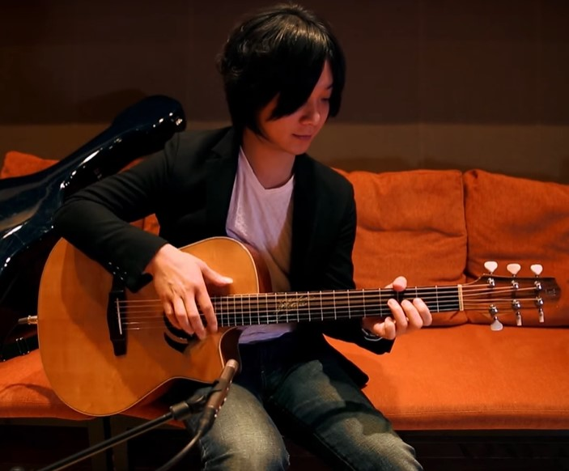
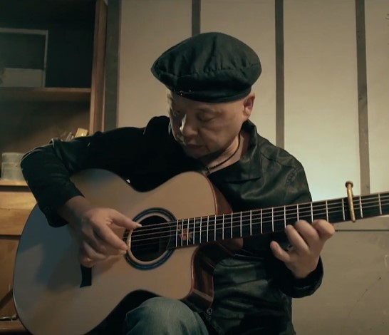

日式指彈
-

押尾光太郎
押尾光太郎(Kotaro Oshio)出生於日本大阪。身高183公分。暱稱押尾桑。他的創作被區分到許多領域，如POP、NEW AGE、JAZZ之中，技巧包含了nail-attack、fingerpicking、slap harmonics、precisestrumming。 曾受到中川砂人（Isato Nakagawa）、岡崎倫典（Rynten Okazaki）兩位老師的指導，深受美國知名吉他手Michael Hedges的影響，本身風格除了具有節奏性之外，也保留了中川砂人的低音及旋律性特色，而創出屬於自己的風格，在日本及其他國家闖出了一片天空。
-

松井祐貴
松井祐貴是非常年輕的日本指彈大師，他的彈奏風格受到吉他大師押尾光太郎的影響，顛覆了他對傳統吉他的認識。 松井祐貴定義自己為敲擊派的吉他獨奏家，他的創作靈感通常來自季節或夜景，而日常生活中浮現的事物也成為他作曲時曲風的關鍵。 他非常擅長擊弦演奏，也能輕易駕馭高難度的曲子。 他以一把吉他演奏出主旋律和伴奏和弦，搭配上他獨樹一幟的敲擊技巧，絢麗豐富的演奏使得他的表演可說是"視覺盛宴"，堪稱目前日本及世界指彈樂壇中最耀眼的巨星。
-

岸部真明
岸部真明（Masaaki Kishibe）是日本新生代指彈吉他演奏家，日本fingerstyle大師Nakagawa Isato的學生。其作品風格非常的多元化，既有優美清新的吉他獨奏小品，又有另類的獨奏作品。
他於2003年参加了National Fingerstyle Guitar Championships，並獲得了第2名的殊榮，展現了其非凡的實力。 所演奏曲目中，揉合了他细腻的情感與嫻熟的演奏技巧，展現了多元的面貌，營造出極具情景和畫面的音樂張力。